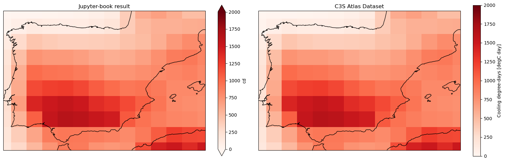

1.2. Cooling Degree Days#
This Jupyter Notebook calculates the index cd (cooling_degree_days) for the CMIP6-CMCC_ESM2 model.
For quick demonstration purposes, only one year from the future period (the year 2080) is calculated for a specific region (Spain)
First, the raw CMIP6 model is downloaded from the CDS, then the index is calculated, and the results are compared with the “Gridded dataset underpinning the Copernicus Interactive Climate Atlas”, also downloaded from the CDS.
1.2.1. Load Python packages and clone and install the c3s-atlas GitHub repository from the ecmwf-projects#
Clone (git clone) the c3s-atlas repository and install them (pip install -e .).
Further details on how to clone and install the repository are available in the requirements
import cdsapi
import os
from pathlib import Path
import xarray as xr
import xclim
import numpy as np
import matplotlib.pyplot as plt
import cartopy.crs as ccrs
from c3s_atlas.utils import (
extract_zip_and_delete,
plot_month
)
from c3s_atlas.fixers import (
apply_fixers,
standard_names,
)
from c3s_atlas.indexes import (
heating_degree_days,
cooling_degree_days,
)
import c3s_atlas.interpolation as xesmfCICA
1.2.2. Download climate data with the CDS API#
Catalogue:
# define some global attributes for the CDS-API
CMIP6_years = {
"ssp5_8_5": ["2080"],
}
# variables
variables = {
't': 'near_surface_air_temperature',
'tx': 'daily_maximum_near_surface_air_temperature',
'tn': 'daily_minimum_near_surface_air_temperature'
}
# directory to download the files
file_dest_CMIP6 = Path('./data/CMIP6')
months = [
'01', '02', '03',
'04', '05', '06',
'07', '08', '09',
'10', '11', '12'
]
days = [
'01', '02', '03',
'04', '05', '06',
'07', '08', '09',
'10', '11', '12',
'13', '14', '15',
'16', '17', '18',
'19', '20', '21',
'22', '23', '24',
'25', '26', '27',
'28', '29', '30', '31'
]
c = cdsapi.Client()
os.makedirs(file_dest_CMIP6, exist_ok=True)
for experiment in CMIP6_years.keys():
for year in CMIP6_years[experiment]:
for var in variables.keys():
path_zip = file_dest_CMIP6 / f"CMIP6_{var}_{experiment}_{year}.zip"
c.retrieve(
'projections-cmip6',
{
'format': 'zip',
'temporal_resolution': 'daily',
'variable': variables[var],
'experiment': experiment,
'model': 'cmcc_esm2',
'year': year,
'month': months,
'day': days,
},
path_zip)
# Extract zip file into the specified directory and remove zip
extract_zip_and_delete(path_zip)
1.2.3. Load files with xarray#
# load files
ds_t = xr.open_dataset(file_dest_CMIP6 / "CMIP6_t_ssp5_8_5_2080.nc")
ds_tx = xr.open_dataset(file_dest_CMIP6 / "CMIP6_tx_ssp5_8_5_2080.nc")
ds_tn = xr.open_dataset(file_dest_CMIP6 / "CMIP6_tn_ssp5_8_5_2080.nc")
1.2.4. Homogenization#
Once the data is downloaded from the CDS it undergoes a process of homogenization:
The metadata of the spatial coordinates is homogenised to use standard names, in particular [lon, lat].
Fix any non-standard calendars used in the data. This typically involves converting the calendars to the CF standard calendar (Mixed Gregorian/Julian) commonly used in climate data.
Convert the units of the data to a common format (e.g. Celsius for temperature). This prevents us from working with the same variables in different units, for example.
Convert the longitude values from the [0, 360] format to the [-180, 180] one. This is done to ensure that the longitude variable is common between the different datasets.
Aggregated to the required temporal resolution. For example, hourly datasets (such as ERA5, ERA5-Land, WFDE5, etc.) will be resampled to daily resolution. This involves using a temporal aggregation method, such as taking the maximum or minimum value for a given variable. As part of this last step, some variable transformations are necessarily applied. For instance, fluxes variables in ERA5 are accumulated, and therefore, the last hour of the day represent daily accumulations. To mention another case, the surface wind is computed as a combination of both the u- and v-components.
project_id = "CMIP6"
variable = 'tas'
var_mapping = {
"dataset_variable": {"tas": "data"},
"aggregation": {"data": "mean"},
}
ds_t = apply_fixers(ds_t, variable, project_id, var_mapping)
2025-03-31 11:12:20,361 — Homogenization-fixers — INFO — Dataset has already the correct names for its coordinates
2025-03-31 11:12:20,374 — Homogenization-fixers — INFO — Fixing calendar for <xarray.Dataset> Size: 81MB
Dimensions: (time: 365, bnds: 2, lat: 192, lon: 288)
Coordinates:
* time (time) object 3kB 2080-01-01 12:00:00 ... 2080-12-31 12:00:00
* lat (lat) float64 2kB -90.0 -89.06 -88.12 -87.17 ... 88.12 89.06 90.0
* lon (lon) float64 2kB 0.0 1.25 2.5 3.75 ... 355.0 356.2 357.5 358.8
height float64 8B ...
Dimensions without coordinates: bnds
Data variables:
time_bnds (time, bnds) object 6kB ...
lat_bnds (lat, bnds) float64 3kB ...
lon_bnds (lon, bnds) float64 5kB ...
tas (time, lat, lon) float32 81MB ...
Attributes: (12/48)
Conventions: CF-1.7 CMIP-6.2
activity_id: ScenarioMIP
branch_method: standard
branch_time_in_child: 60225.0
branch_time_in_parent: 60225.0
comment: none
... ...
title: CMCC-ESM2 output prepared for CMIP6
variable_id: tas
variant_label: r1i1p1f1
license: CMIP6 model data produced by CMCC is licensed und...
cmor_version: 3.6.0
tracking_id: hdl:21.14100/25c823a7-e043-463c-a6b7-4a6f067f78a4
2025-03-31 11:12:20,714 — UNITS_TRANSFORM — INFO — The dataset tas units are not in the correct magnitude. A conversion from K to Celsius will be performed.
2025-03-31 11:12:21,091 — Homogenization-fixers — INFO — The dataset is in daily or monthly resolution, we don't need to resample it from hourly frequency
project_id = "CMIP6"
variable = 'tasmax'
var_mapping = {
"dataset_variable": {"tasmax": "data"},
"aggregation": {"data": "mean"},
}
ds_tx = apply_fixers(ds_tx, variable, project_id, var_mapping)
2025-03-31 11:12:21,095 — Homogenization-fixers — INFO — Dataset has already the correct names for its coordinates
2025-03-31 11:12:21,100 — Homogenization-fixers — INFO — Fixing calendar for <xarray.Dataset> Size: 255kB
Dimensions: (time: 365, bnds: 2, lat: 12, lon: 14)
Coordinates:
* time (time) object 3kB 2080-01-01 12:00:00 ... 2080-12-31 12:00:00
* lat (lat) float64 96B 34.4 35.34 36.28 37.23 ... 42.88 43.82 44.76
* lon (lon) float64 112B -11.25 -10.0 -8.75 -7.5 ... 1.25 2.5 3.75 5.0
height float64 8B ...
Dimensions without coordinates: bnds
Data variables:
time_bnds (time, bnds) object 6kB ...
lat_bnds (lat, bnds) float64 192B ...
lon_bnds (lon, bnds) float64 224B ...
tasmax (time, lat, lon) float32 245kB ...
Attributes: (12/48)
Conventions: CF-1.7 CMIP-6.2
activity_id: ScenarioMIP
branch_method: standard
branch_time_in_child: 60225.0
branch_time_in_parent: 60225.0
comment: none
... ...
title: CMCC-ESM2 output prepared for CMIP6
variable_id: tasmax
variant_label: r1i1p1f1
license: CMIP6 model data produced by CMCC is licensed und...
cmor_version: 3.6.0
tracking_id: hdl:21.14100/ba2e335b-8bac-45ec-abbe-f1f16299d2d4
2025-03-31 11:12:21,112 — UNITS_TRANSFORM — INFO — The dataset tasmax units are not in the correct magnitude. A conversion from K to Celsius will be performed.
2025-03-31 11:12:21,120 — Homogenization-fixers — INFO — The dataset is in daily or monthly resolution, we don't need to resample it from hourly frequency
project_id = "CMIP6"
variable = 'tasmin'
var_mapping = {
"dataset_variable": {"tasmin": "data"},
"aggregation": {"data": "mean"},
}
ds_tn = apply_fixers(ds_tn, variable, project_id, var_mapping)
2025-03-31 11:12:21,698 — Homogenization-fixers — INFO — Dataset has already the correct names for its coordinates
2025-03-31 11:12:21,703 — Homogenization-fixers — INFO — Fixing calendar for <xarray.Dataset> Size: 81MB
Dimensions: (time: 365, bnds: 2, lat: 192, lon: 288)
Coordinates:
* time (time) object 3kB 2080-01-01 12:00:00 ... 2080-12-31 12:00:00
* lat (lat) float64 2kB -90.0 -89.06 -88.12 -87.17 ... 88.12 89.06 90.0
* lon (lon) float64 2kB 0.0 1.25 2.5 3.75 ... 355.0 356.2 357.5 358.8
height float64 8B ...
Dimensions without coordinates: bnds
Data variables:
time_bnds (time, bnds) object 6kB ...
lat_bnds (lat, bnds) float64 3kB ...
lon_bnds (lon, bnds) float64 5kB ...
tasmin (time, lat, lon) float32 81MB ...
Attributes: (12/48)
Conventions: CF-1.7 CMIP-6.2
activity_id: ScenarioMIP
branch_method: standard
branch_time_in_child: 60225.0
branch_time_in_parent: 60225.0
comment: none
... ...
title: CMCC-ESM2 output prepared for CMIP6
variable_id: tasmin
variant_label: r1i1p1f1
license: CMIP6 model data produced by CMCC is licensed und...
cmor_version: 3.6.0
tracking_id: hdl:21.14100/395924ab-4d70-4565-a80a-ebc9df881942
2025-03-31 11:12:22,029 — UNITS_TRANSFORM — INFO — The dataset tasmin units are not in the correct magnitude. A conversion from K to Celsius will be performed.
2025-03-31 11:12:22,412 — Homogenization-fixers — INFO — The dataset is in daily or monthly resolution, we don't need to resample it from hourly frequency
1.2.5. Calculate cd using in-house functions indexes.#
Some indices are not implemented in open-source Python libraries or require custom (in-house) implementations to enhance operability for large-scale index calculations. cooling_degree_days in-house functions resample the index to annual resolutions using the argument (‘YS’). See pandas timeseries for more temporal resampling options.
ds_cd = cooling_degree_days(tas = ds_t['tas'],
tasmax = ds_tx['tasmax'],
tasmin = ds_tn['tasmin'],
freq = 'YS',
thresh = 22)
“freq” attribute indicates output time frequency following pandas timeserie codes
# Convert DataArray to Dataset with specified variable name
ds_cd = ds_cd.to_dataset(name='cd')
ds_cd = standard_names(ds_cd)
1.2.6. Interpolation to a common and regular grid using xESMF#
A wrapper for the xESMF Python package was developed within the framework of the C3S Atlas project to extend its functionalities to all datasets (regular, curvilinear, etc.)
# interpolate data
int_attr = {'interpolation_method' : 'conservative_normed',
'lats' : np.arange(-89.5, 90.5, 1),
'lons' : np.arange(-179.5, 180.5, 1),
'var_name' : 'cd'
}
INTER = xesmfCICA.Interpolator(int_attr)
ds_cd_i = INTER(ds_cd)
1.2.7. Download climate data with the CDS API#
project = "CMIP6"
scenario = "ss585"
var = 'cd'
# directory to download the files
dest = Path('./data/CMIP6')
os.makedirs(dest, exist_ok=True)
Download SSP scenario#
filename = 'cd_CMIP6_ss585_yr_201501-210012.zip'
dataset = "multi-origin-c3s-atlas"
request = {
'origin': 'cmip6',
'experiment': 'ssp5_8_5',
'domain': 'global',
'variable': 'annual_cooling_degree_days',
'area': [44.5, -9.5, 35.5, 3.5]
}
client = cdsapi.Client()
client.retrieve(dataset, request).download(dest / filename)
extract_zip_and_delete(dest / filename)
# load data with xarray
ds_cd_C3S_Atlas = xr.open_dataset(dest /"cd_CMIP6_ss585_yr_201501-210012.nc")
# select member (note than member names in the "Copernicus Interactive Climate Atlas: gridded monthly dataset"
# are remappend to follow the DRS as much as possible)
select_member = [
str(mem.data) for mem in ds_cd_C3S_Atlas.member_id if "cmcc-esm2" in str(mem.data).lower()
][0]
print(select_member)
CMCC_CMCC-ESM2_r1i1p1f1
ds_cd_C3S_Atlas_member_year = ds_cd_C3S_Atlas.sel(
member = np.where(ds_cd_C3S_Atlas.member_id == select_member)[0],
time = "2080"
)
Plot results#
Comparison of the results obtained with present Jupyter notebook and the reference C3S Atlas Dataset underpinning the C3S Atlas. A geographical subset focusing on Spain is selected to show the results.
zoomin_extent = [-9.5, 3.5, 35.5, 44.5]
# zoom for Spain
proj = ccrs.PlateCarree()
fig, ax = plt.subplots(nrows=1, ncols=2, subplot_kw={'projection': proj}, figsize=(20, 6))
ds_cd_i['cd'].plot(ax = ax[0], cmap = 'Reds', vmin = 0, vmax = 2000)
ax[0].set_title('Jupyter-book result')
ax[0].set_extent(zoomin_extent)
ax[0].coastlines()
ds_cd_C3S_Atlas_member_year['cd'].plot(ax = ax[1], cmap = 'Reds', vmin = 0, vmax = 2000)
ax[1].set_title('C3S Atlas Dataset')
ax[1].set_extent(zoomin_extent)
ax[1].coastlines()
plt.subplots_adjust(wspace=0.01, hspace=0.1)
